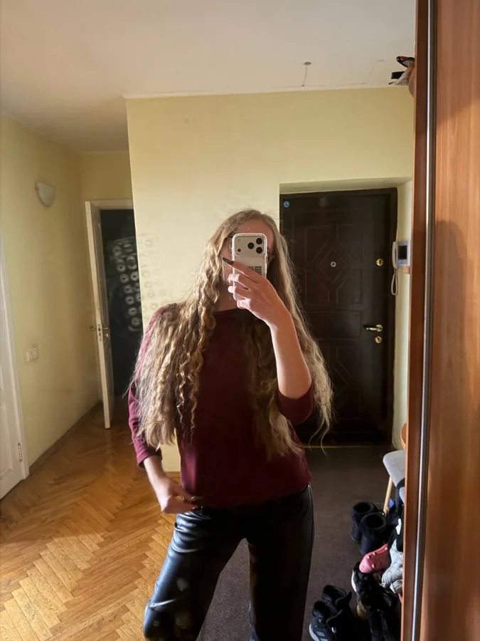
Савчук Яна
Хочу створювати зміни разом з учнями, розвивати шкільні ініціативи та давати кожному більше можливостей проявити себе.

Хочу створювати зміни разом з учнями, розвивати шкільні ініціативи та давати кожному більше можливостей проявити себе.
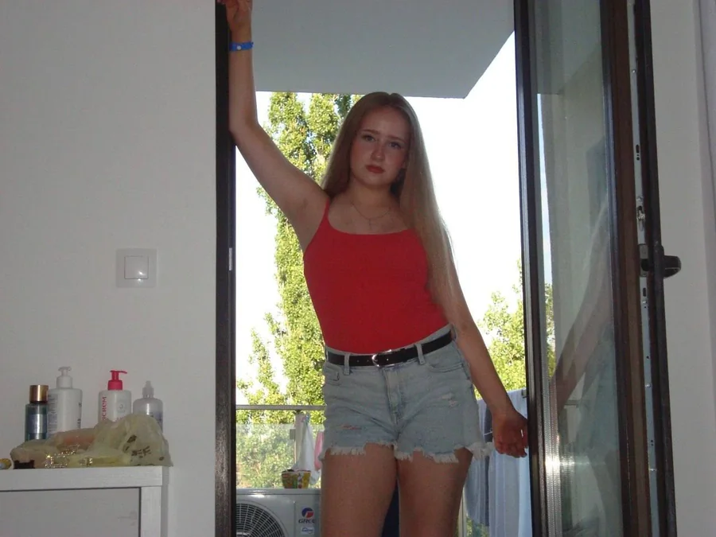
Відповідальна, творча, активна. Люблю співпрацю та організовувати цікаві заходи. Ніколи не сиджу на місці.
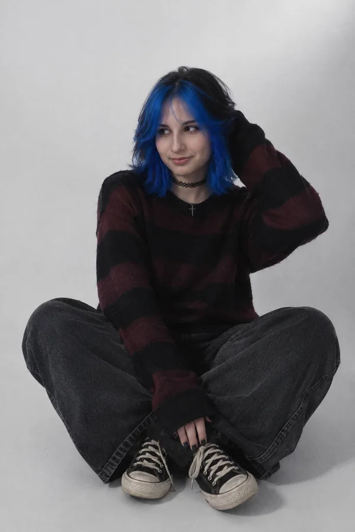
Минулого року вже мала досвід роботи в шкільному парламенті. Брала участь в організації заходів та роботі команди, тому хочу й надалі розвиватися та бути активною частиною шкільного життя.
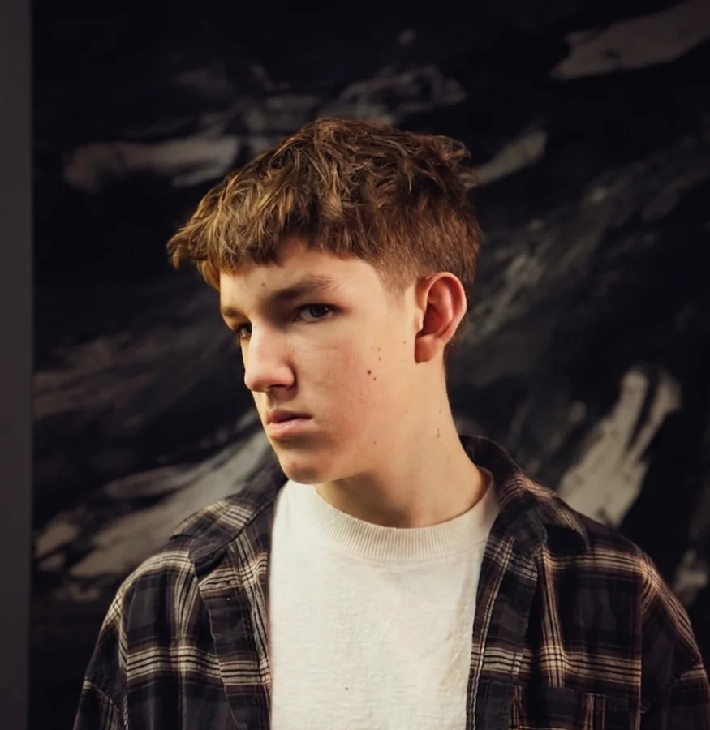
Займаюся цифровою трансформацією учнівського закладу, працюю в галузі IoT та розробляю на компонентах Espressif. У 2026 році розробив проєкт системи оповіщення про повітряну тривогу на ESP32 для аудіокомплексу ВЕЛЛЕЗ.
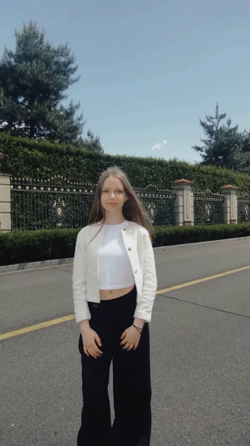
Я прагну постійно розвиватися, пробувати нове й досягати більшого, а також хочу робити наше шкільне життя цікавішим, насиченішим і таким, до якого хочеться бути частиною.
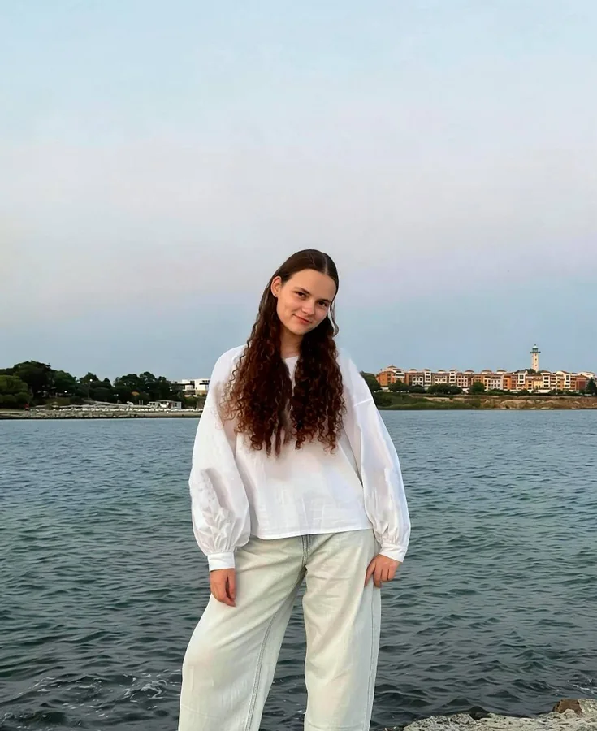
Люблю створювати щось разом із дружньою командою. Хочу допомагати робити шкільне життя цікавішим і комфортнішим, щоб кожен міг бути почутим.
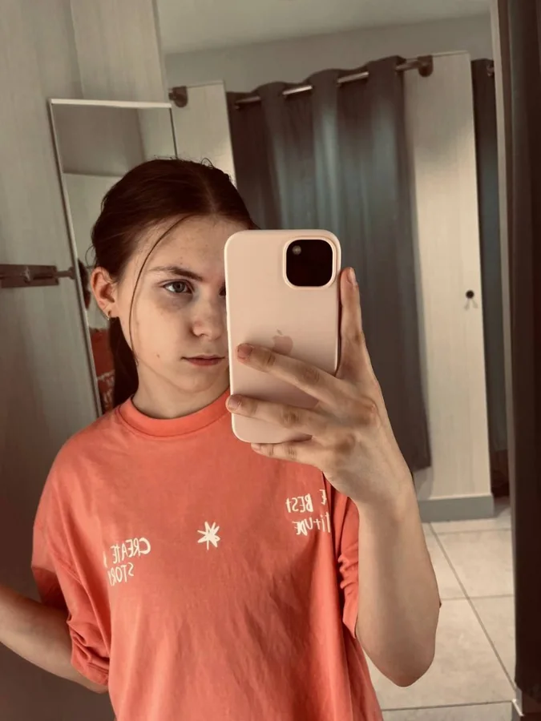
Люблю креативність, брати участь у шкільних заходах та допомагати у створенні незабутніх моментів для всіх.
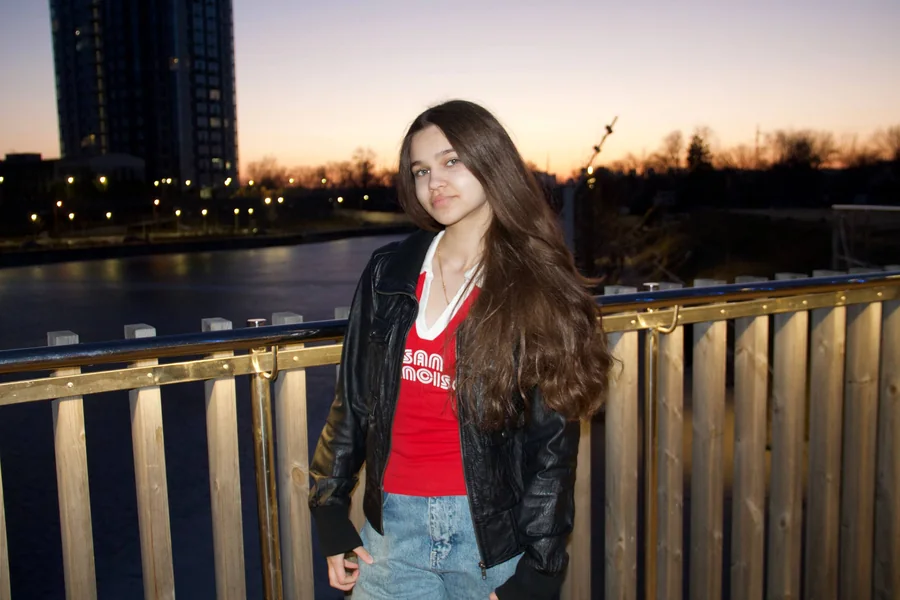
Творча, активна та відкрита до нових ідей. Люблю життя ліцею, сцену, спілкування і командну роботу.
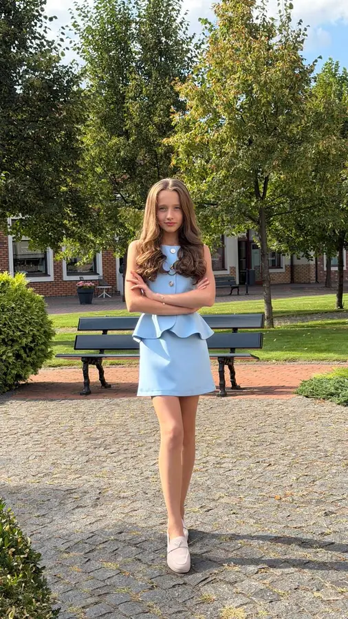
Активна в шкільному житті, люблю виступати, працювати в команді та долучатися до цікавих заходів. Відкрита до нових ідей і завжди готова підтримати та взяти участь у корисних справах нашого ліцею.
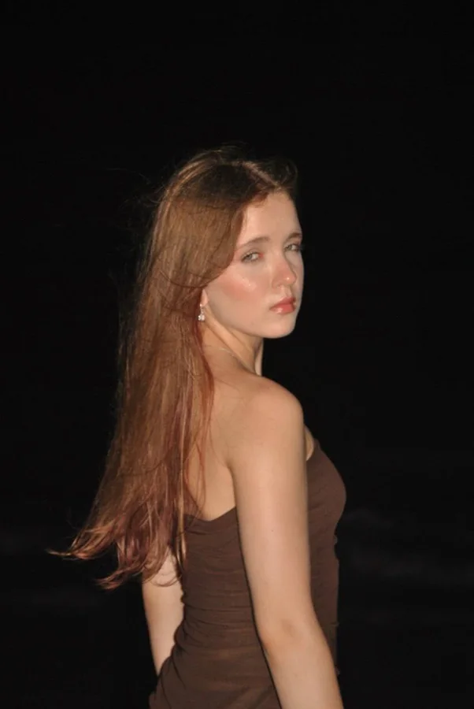
Я люблю створювати нові ідеї та втілювати їх у життя, брати участь у шкільних ініціативах і працювати над тим, щоб наше ліцейне життя ставало цікавішим та комфортнішим для всіх.
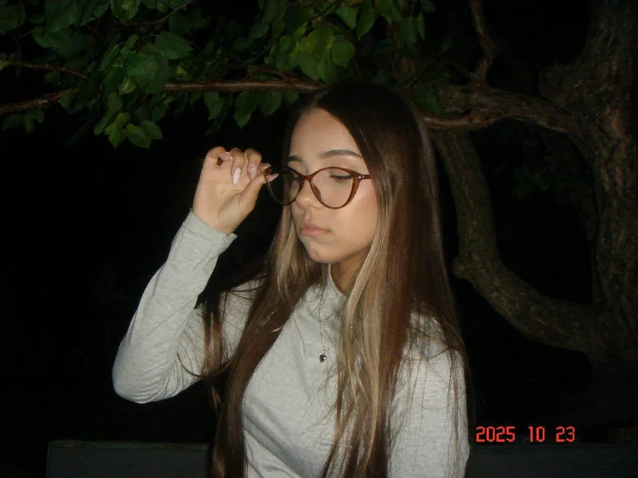
Творча та театральна людина з великою фантазією. Люблю сцену, акторство та створення нових ідей.
Цілеспрямована, енергійна та креативна. Люблю працювати в команді, знаходити нові ідеї та брати участь у цікавих проєктах. Завжди прагну розвиватися й пробувати щось нове.
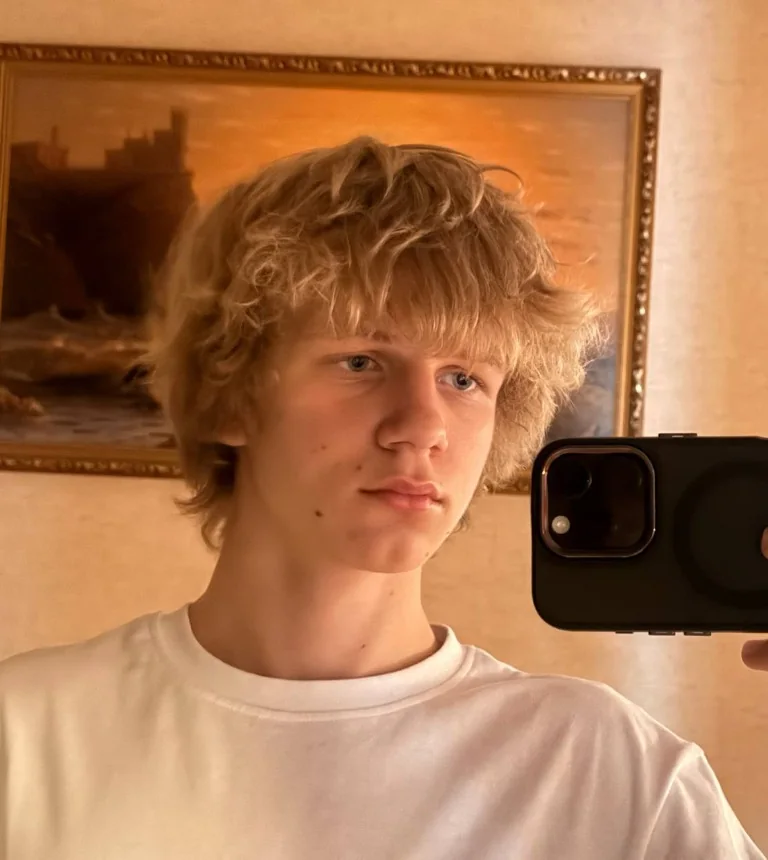
Отримав грамоту за участь у чомусь (у чому саме — ніхто не пам'ятає, але грамота ламінована).
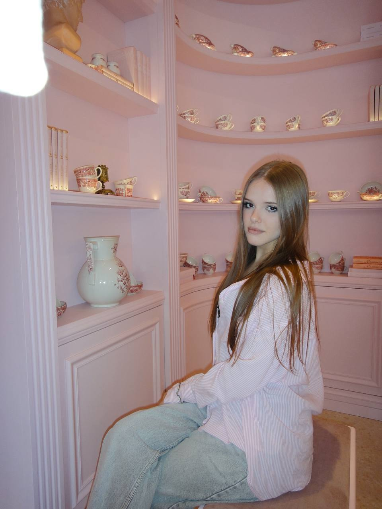
Люблю бути активною, пробувати щось нове та працювати над цікавими ідеями. Хочу разом із командою робити наш ліцей кращим.
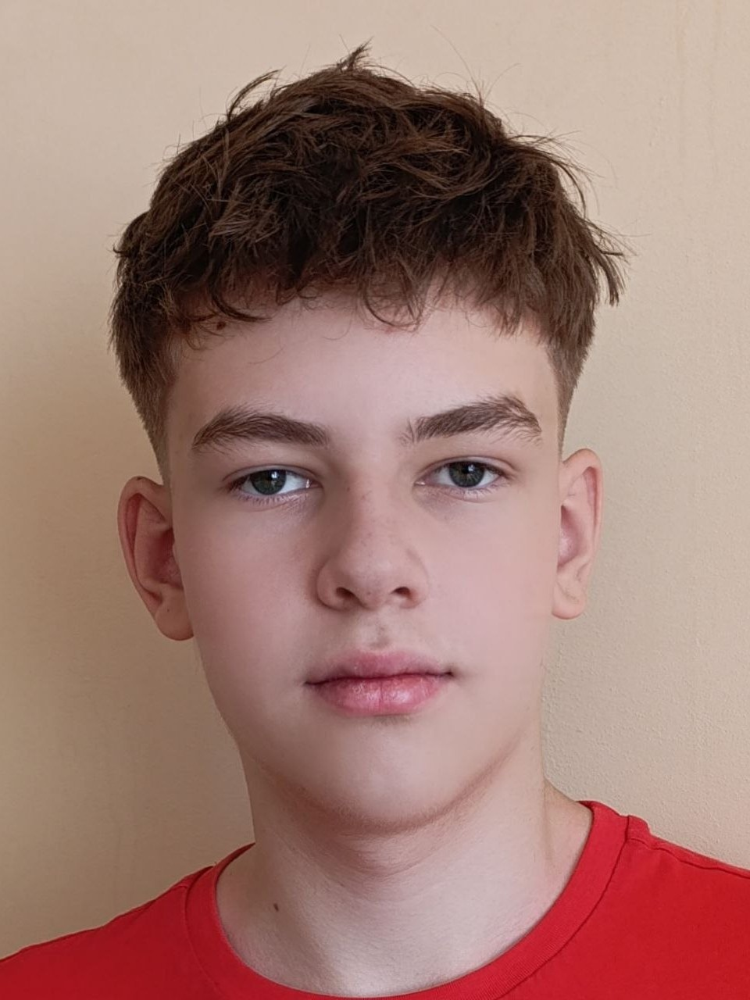
Різностороння та цілеспрямована людина. Захоплююсь фізикою, ІТ і сучасними технологіями, люблю мислити нестандартно та знаходити рішення.
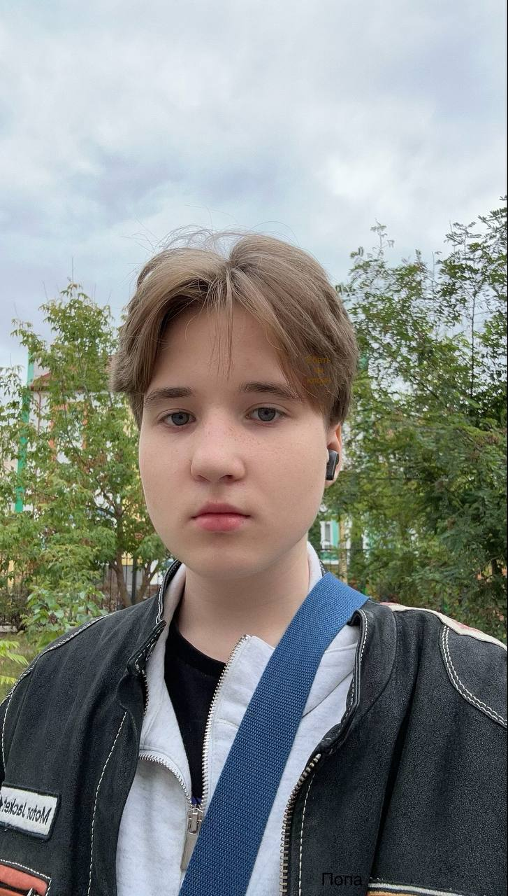
Для мене парламент — це досвід у місці, де можна проявити себе. Саме через це я і тут.
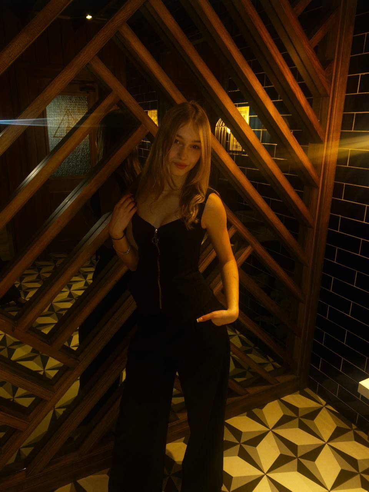
Шкільний парламент для мене — це відповідальність і дія, можливість чути запити учнів та разом створювати комфортний простір у ліцеї.
ДВА НАПРЯМИ. СПІЛЬНА ДІЯ.
Хочемо повернутися до ідеї, яку вже пропонували раніше, але так і не вдалося реалізувати. Встановити в ліцеї контейнери для сортування сміття та поступово зробити це звичною частиною шкільного життя.
До важливих історичних дат створюватимемо тематичні випуски: кожна паралель отримуватиме окрему тему для дослідження та оформлення. Виконані роботи об’єднуватимемо в спільний стенд, щоб історію можна було не лише вивчати, а й бачити навколо себе.